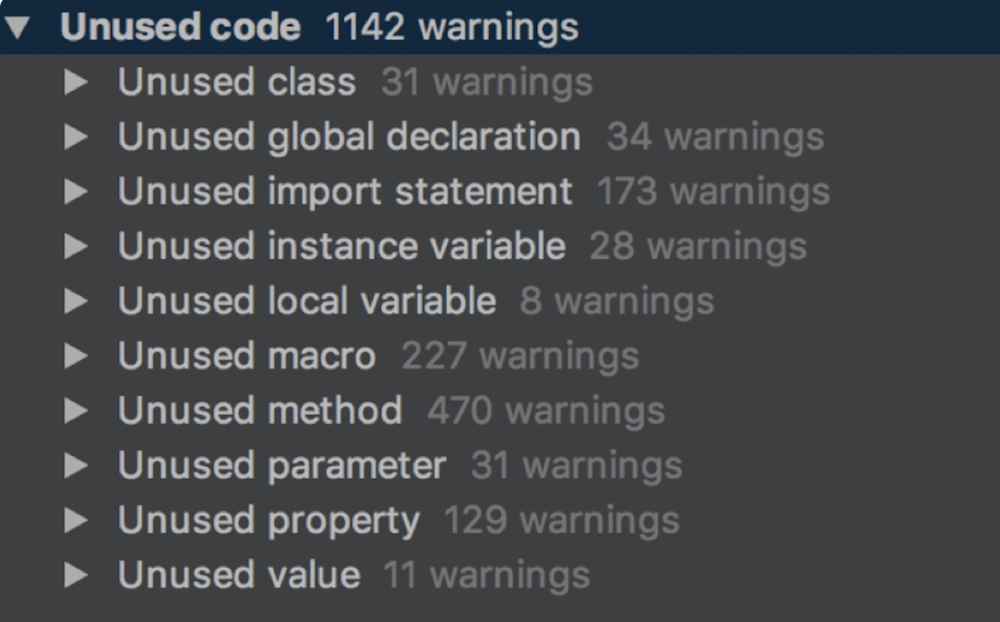

学习自 iOS开发高手课-包大小：如何从资源和代码层面实现全方位瘦身？
APPStore对大于150M的应用无法再OTA环境下载，这就只能在wifi环境下下载，因此150M就是App的生死线
如果App要兼容iOS7和iOS8的话，苹果规定主二进制 text 段的大小不能超过 60MB，如果没有达到这个标准，甚至无法提交AppStore
App Thinning
App Thinning是苹果公司推出的一项可以改善APP下载进程的新技术，主要为解决用户下载APP耗费流量过高，并节省用户iOS设备存储空间
因为iOS设备的屏幕尺寸和分辨率 越来越多样化，就需要更多资源来匹配不同尺寸和分辨率。同时，App也会有32位、64位不同芯片架构的优化版本。如果这些都在同一个包中，那么用户下载包的大小势必就会变得更大
而苹果提供的App Thinning就是针对不同的设备只选择适合当前设备的内容进行下载。比如，iPhone6只下载2x资源，而iPhone6 P则只下载3x图片资源
在之前，每个app包会包含多个芯片的指令集架构文件。在而使用App Thinning后，用户下载时就只会下载一个适合自己设备的芯片指令集架构文件
下图为所有设备的芯片指令集以及支持的最高和最低版本

App Thinning有三种方式，包括： App Slicing、Bitcode、On-Demand Resource
- App Slicing：会在你向iTunnes Connrct上传App后，对App做切个，创建不同的变体，来适应不同的设备
- On-Demand Resource，主要是为游戏多关卡场景服务。可以根据用户的关卡进度下载随后关卡资源，并且删除已过关的资源，来减少出装app的大小
- Bitcode， 针对特定设备进行包大小优化，优化并不明显
App Thinning的使用
使用App Thinning很简单，只需要通过Xcode添加 xcassets目录，然后将资源文件放进来即可：
即添加Asset Catalog模板，按照模板添加资源即可，apple会创建不同的变体来减少app安装体积
图片资源优化
图片资源的优化空间主要体现在删除无用图片和图片资源压缩两方面。
查找无用图片资源
- 通过find获取App安装包中所有资源文件
- 设置用到的资源类型，比如jpg、gif、png、webp
- 使用正则表达式匹配在源码中找出使用到的资源名，比如
pattern=@"@"(.+?)"" - 使用find命令找到所有资源文件，再去掉代码中使用到的资源文件，剩下的就是未使用到的了
- 对于按照规则设置的资源名字，我们需要在匹配使用资源的正则表达式里，添加响应的规则，比如
image_%d - 确认无用资源后，就可以对无用资源执行删除操作了，这个删除操作可以使用
NSFileManager系统类功能完成
可以使用一些开源的工具，推荐的为LSUnusedResources,其还可以对使用编号规则的图片，直接添加规则处理

图片资源压缩
在App中 图片资源总是占大头的。因此我们最好在不损失图片质量的前提下，尽可能的压缩。目前最好的压缩方案就是，将图片转为webP(其是谷歌的一个开源项目)。
- WebP压缩率高，而且肉眼看不出来差异，同时支持有损和无损两种压缩模式。比如，将Gif专务Anumated WebP，有损模式下会减少64%大小，无损模式下会减少19%大小
- WebP支持Alpha透明和24-bit颜色数，不会像PNG8那样因为颜色不够而出现毛边
将图片转为webP
Google提供了cwebp工具来将其它图片转成WebP。cwebp只需根据图片情况设置相应参数即可：
cwebp [options] input_file -o output_file.webp
//比如无损压缩文件命令如下 -lossless表示无损压缩
cwebp -lossless original.png -o new.webp
注意：
在图片色值不同的情况下，可以选择用-q参数进行设置，在不损失图片质量情况下进行最大化压缩：
- 小于256色适合无损压缩，压缩率高，参数使用-lossless -q 100
- 大于256色适合用75%的有损压缩，参数使用-q 75
- 远大于256色 适合使用75%一下的压缩率，参数-q 50 -m 6
除了使用google提供的cwebp工具外，可以使用企鹅公司开发的iSparta图形化工具，实现PNG到WebP转换，还可以批量处理和记录操作配置。至于其他格式图片，那就先转png再转webP即可
显示WebP图片
在图片压缩完成后，还需要在项目中显示图片，使用libwebp进行解析。可以参考这个iOS项目范例
当然，因为WebP进行了压缩，因此在CPU消耗和解码时间上是会比PNG大两倍。所以，需要在性能和体积上做出取舍
建议： 如果图片大小超过100K，考虑使用WebP；小于100K时，可以使用网页工具TinyPng或者图形化工具ImageOptim进行图片压缩。这两种工具的压缩率没有WebP高，不会改变图片压缩方式，相应的解析式对性能损耗也不会增加
代码瘦身
App的安装包之中主要就是资源文件和可执行文件，而我们在掌握了对图片资源的优化之后，就需要学习怎么优化可执行文件了
可执行文件就是一个Mach-O文件了，大小由其代码量决定。通常，对可执行文件瘦身就是，删除无用代码的过程
- 首先，找出方法和类的全集
- 然后，找到使用过的方法和类
- 接下来，取二者的差集即为无用代码
- 最后人工确认进行删除
LinkMap 结合 Mach-O找到无用代码
LinkMap 来获得所有的代码类和方法的信息
通过在build setting中打开Write Link Map然后指定其path 可以获得编译后的LinkMapp文件，其主要分为 Object File、Section、Symbols
- Object File：主要包含了代码工程的所有文件
- Section：描述代码段在生成的Mach-O里的偏移位置和大小
- Symbols会列出每个方法、类、block、以及它们的大小
通过Mach-O获取所有使用过的方法和类
iOS方法都是通过objc_send方法调用的。而，objc_msgSend在Mach-O文件中是通过__objc_selrefs这个section来获取selector这个参数的
因此: __Objc_selrefs里是调用过的方法。_objc_classrefs里是调用过的类，_objc_superrefs里是调用过super的类。因此，通过_objc_classrefs和_objc_superrefs就可以获取所有使用过的类和子类
想要查看Mach-O文件中的信息 我们可以通过MachOView这个软件查看文件中的信息，其源码地址

因为可能存在运行时调用，所以这种方法并不完美，需要做二次确认，而且人工量太大，不适合频繁检测
AppCode找出无用代码
AppCode当代码量过百万时，就无法做静态分析了。但是当项目工程量不大时，是可以直接用AppCode来做静态分析的。毕竟当代码量达到百万行级别的团队，是会自己通过Clang静态分析来开发工具，检查无用的方法和类
使用很简单 在AppCode中选择Code->Inspect Code就可以进行静态分析
静态分析之后，可以再Ununsed Code中看到所有的无用代码

其中包括了
- 无用类：Unused class 无用类，Unused import statement 无用类引用声明， Unused property 无用的属性
- 无用方法：Unused method 无用的方法 Unused parameter 无用参数 Unused instance variable无用的实例变量 Unused local variable无用的局部变量 Unused value 无用值
- 无用宏： Unused macro 无用的宏
- 无用全局： Unused global declation 是无用的全局声明
注意，AppCode检查存在的问题:
- JSONModel里定义了未使用的协议会被判定为无用协议
- 子类使用了父类的方法，那这个服类方法并不会任务被使用了
- 通过点方式使用的属性，该属性会被认为没有使用
- 使用performSelector方法调用的方法，是检查不出的
- 运行时声明类的情况检查不出来
因此，Appcode检查的无用代码也请 人工二次确认之后才能安全删除
运行时检查类是否真的被使用
通过ObjC的runtime源码，我们可以找到怎么判断一个类是否初始化过的函数:
#define RW_INITIALIZED (1<<29)
bool isInitialized() {
return getMeta()->data()->flags & RW_INITIALIZED;
}
isInitialized的结果会保存到元类的class_rw_t结构体的flags信息里，flags的1<<29位记录的就是这个类是否初始化的信息。而flags的其他位记录的信息
// 类的方法列表已修复
#define RW_METHODIZED (1<<30)
// 类已经初始化了
#define RW_INITIALIZED (1<<29)
// 类在初始化过程中
#define RW_INITIALIZING (1<<28)
// class_rw_t->ro 是 class_ro_t 的堆副本
#define RW_COPIED_RO (1<<27)
// 类分配了内存，但没有注册
#define RW_CONSTRUCTING (1<<26)
// 类分配了内存也注册了
#define RW_CONSTRUCTED (1<<25)
// GC：class 有不安全的 finalize 方法
#define RW_FINALIZE_ON_MAIN_THREAD (1<<24)
// 类的 +load 被调用了
#define RW_LOADED (1<<23)
这样就能够找出哪些类是没有初始化的，找到真实环境中没有用到的类并清理。具体实施时，可以线下测试检查所有类，测出那些类没有使用，然后上线针对没有用到的类进行多版本检测，判断合理性后二次确认，并且最终将真正没有用到的类进行删除